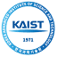

01Research & Development Projects연구·개발 프로젝트
- Build GAIA, a domain-specialized LLM agent that solves problems users cannot solve alone: RAG over large game-knowledge contexts, an agent loop reading live screen and audio, voice in and out, and an operator dashboard.
- Own the full loop from problem to proof: field interviews to locate the real barrier, then requirements, shipped prototypes, and evaluation with the same users.
- Design principles distilled from this work — including when an AI assistant should intervene and how refusals stay trustworthy — published at ACM IUI '26.
- 사용자가 혼자 해결할 수 없는 문제를 푸는 도메인 특화 LLM 에이전트 GAIA 개발. 대규모 게임 지식 RAG, 실시간 화면·음성 맥락 에이전트 루프, 음성 입출력, 운영 대시보드.
- 문제 발굴부터 검증까지 전 과정 수행: 현장 인터뷰로 실제 장벽을 찾고, 요구사항 정의, 프로토타입 구현, 동일 사용자 평가.
- 이 과정에서 도출한 설계 원칙 — AI가 언제 개입해야 하는가, 거부는 어떻게 신뢰를 유지하는가 — 을 ACM IUI '26에 게재.
 Samsung ElectronicsNexon Intelligence LabsSmilegate D&INational Rehabilitation CenterSpecialEffect (UK)삼성전자넥슨 인텔리전스 랩스마일게이트 D&I국립재활원SpecialEffect (영국)
Samsung ElectronicsNexon Intelligence LabsSmilegate D&INational Rehabilitation CenterSpecialEffect (UK)삼성전자넥슨 인텔리전스 랩스마일게이트 D&I국립재활원SpecialEffect (영국)- Designed, built, and delivered a production data-quality engine: rule-based and statistical validation over real enterprise data, shipped as a versioned release with a formal delivery report.
- Deliberately chose not to use an LLM where determinism and auditability mattered more — drawing the boundary of where AI belongs is part of the engineering.
- 실제 기업 데이터에 대한 규칙·통계 기반 품질 측정/검증 엔진을 설계·구현해 정식 릴리스와 결과보고서로 납품.
- 결정론과 감사 가능성이 중요한 구간에는 LLM을 쓰지 않기로 판단 — AI를 어디에 배치하지 않을지 정하는 것까지가 설계임을 실무로 증명.
- Solved a knowledge-transfer problem by design: a serious game that carries Jeju Haenyeo practice and environmental knowledge between generations.
- Ran field-based design work with the diving communities themselves.
- 세대 간 지식 전달 문제를 설계로 해결: 제주 해녀의 작업 방식과 환경 지식을 이어주는 시리어스 게임 설계.
- 해녀 공동체와 함께하는 현장 기반 디자인 작업 수행.
- Solved a spatial-adaptation problem: an XR system that re-fits virtual content to real-world conditions in real time.
- Worked on multimodal visual-haptic feedback for presence and environmental responsiveness.
- 공간 적응 문제 해결: 현실 조건에 맞춰 가상 콘텐츠를 실시간 재배치하는 XR 시스템 설계·구현.
- 현존감과 환경 반응성을 위한 멀티모달 시각-햅틱 피드백 작업.
 NYUUniSAAnipenbHaptics프라운호퍼 연구소NYUUniSAAnipenbHaptics
NYUUniSAAnipenbHaptics프라운호퍼 연구소NYUUniSAAnipenbHaptics- Answered a detectability problem with computer vision and simulation: how KF-21 Boramae camouflage holds up across altitude, terrain, and weather.
- Developed colorways and pattern configurations; selected proposals were adopted into real project outputs.
- 컴퓨터 비전과 시뮬레이션으로 피탐성 문제를 분석: 고도·지형·기상 조건별 KF-21 보라매 위장 성능 평가.
- 위장 컬러웨이 및 패턴 구성 개발, 일부 제안은 실제 프로젝트 결과물에 반영.
- Applied AI object tracking to a dense-traffic detection problem: preprocessing, detection workflow, and anchor-box optimization for real road scenes.
- Built the IoT roadside sensing hardware that fed it, including 3D-printed enclosures.
- 고밀도 교통 환경의 탐지 문제에 AI 객체 추적을 적용: 전처리·탐지 워크플로·앵커박스 최적화 담당.
- 이를 뒷받침하는 IoT 도로변 센싱 하드웨어 개발, 3D 프린팅 인클로저 설계 포함.
02Honors & Awards명예 및 수상
- Three cuts: selected by written application into the roughly 25-competitor FDE final field, then the Top 6, then within the Top 3.
- A one-day hackathon scoring "AI nativeness". 10M KRW prize pool, hiring fast-track for winners.
- Unseen business problem, end to end in under four hours: requirements elicited from an AI scenario agent, then designed, built, and verified.
- Judged on Cofa Probe, then a live public deliberation on blind reports: problem definition, how AI is directed, iteration under constraint, verification, and handoff quality.
- 3단계 선발: 서류 지원으로 FDE 트랙 본선 약 25명에 진출, 이후 Top 6를 거쳐 최종 Top 3 이내 입상.
- 'AI 네이티브 역량'을 평가한 1일 해커톤. 총 상금 1,000만원, 입상자 채용 전형 우대.
- 처음 보는 실무 문제를 4시간 내 완수: AI 시나리오 에이전트로 요구사항 도출, 설계·구현·검증까지.
- Cofa Probe 심사 후 블라인드 리포트 기반 공개 토론으로 최종 선발. 평가 항목: 문제 정의, AI 지휘 방식, 제약 하의 반복 개선, 결과 검증, 핸드오프 품질.
 OpenAI크래프톤CJ올리브영OpenAI
OpenAI크래프톤CJ올리브영OpenAIAwarded for "Design principles for game AI assistant: Analyzing functional barriers and accessibility requirements of players with disabilities" (Proceedings 83–88), presented 30 May 2026 at Tech University of Korea.
“게임 AI 어시스턴트 설계 원칙: 장애 플레이어의 기능적 장벽과 접근성 요구사항 분석” (논문집 83–88)으로 수상, 2026년 5월 30일 한국공학대학교에서 발표.
KAIST's top TA award: selected as the best case presentation on running a course with the Edu4.0 Q teaching model.
KAIST TA 최우수상: Edu4.0 Q 모델 수업 운영 사례 발표에서 최우수 평가.

KAISTKAISTSelected as a representative climate-tech startup team, winning early-stage funding and mentorship from the foundation's startup ecosystem.
기후테크 대표 창업팀으로 선정, 재단 창업 생태계의 초기 자금과 멘토링 확보.
Won the grand prize as technical lead: built a large-scale Unreal Engine media facade that ran as a working smart-city showcase for Pohang.
기술 리드로 최우수상 수상: 대규모 언리얼 엔진 미디어 파사드를 실제 구동되는 스마트시티 쇼케이스로 구현.
Society-level student research award for eye-tracking VR game studies: analyzing oculomotor response to make virtual environments more immersive and more accessible.
시선추적 VR 게임 연구로 학회 우수 학생 연구상: 안구 운동 반응 분석으로 가상 환경의 몰입감과 접근성을 높임.
Built Watchers (team EyeCU), a digital therapeutic on Meta Quest Pro eye tracking that turns eye-muscle rehabilitation into play. Adult division; awarded the Skonec Entertainment CEO's Award.
메타 퀘스트 프로 시선추적으로 눈 근육 재활을 놀이처럼 만든 디지털 치료기기 Watchers 개발 (팀명 EyeCU). 성인 부문, 스코넥엔터테인먼트 대표이사상 수상.
Top entry of the university-wide startup idea competition: an ESG-driven augmented-reality business model, ranked first for technical feasibility and social impact.
교내 창업 아이디어 경진대회 최우수작: ESG와 증강현실을 결합한 비즈니스 모델로 실현 가능성·사회적 영향력 1위 평가.
Student research award for experimental work on VR exposure therapy for cynophobia, proposing spatiotemporal design factors that raise treatment efficacy.
개 공포증 VR 노출 치료 실험 연구로 우수 학생 연구상: 치료 효과를 높이는 시공간 설계 요소 제안.
Top 14 from a global applicant pool ($91,000 prize pool); pitched a blockchain solution live to a panel of VCs and industry experts.
전 세계 참가팀 중 상위 14팀 진출 (총 상금 9만 1천 달러): VC·산업 전문가 패널 앞 블록체인 솔루션 라이브 피칭.
03Education학력
04Publications논문Google Scholar ↗Google Scholar ↗
21 total · First author 7 · Co-first author 4 · Co-second author 1 총 21편 · 제1저자 7 · 공동 제1저자 4 · 공동 제2저자 1
Thesis학위논문1
(2026). Designing and evaluating an AI assistant for players with disabilities: Empirical findings and future design implications. Master's thesis, Korea Advanced Institute of Science and Technology. Advisor: Young Yim Doh. MGCT 26010
Journal Articles학술지 논문4
1, & Doh, Y. Y. (2026). Toward Ludic AI: Proposing an evaluation framework for the ludic competence of game-playing AI. Digital Game Research, 2(1), 29–59. DOI ↗ Article ↗
2, Lee, S., Jeong, S., & Doh, Y. Y. (2026). Patterns of preference for AI assistants in game accessibility among players with disabilities: An exploratory analysis of functional barriers and intervention timing. Journal of Korea Multimedia Society, 29(6), 885–904. DBpia ↗
3, Yoo, S., Lee, Y., Kim, Y., Kim, H., & Han, D. (2023). Analysis of the effects of positive and negative VR game contents on enhancing environmental awareness based on self-reliant and team-based play styles. Journal of the Korea Computer Graphics Society, 29(3), 137–147. Article ↗
4Yoon, D., Park, S., Song, Y., , & Chung, D. (2023). Methodology for improving the performance of demand forecasting through machine learning. Research Square [Preprint]. Preprint ↗
International Conference Proceedings국제 학술대회2
5, Seo, G., Jeong, S., & Doh, Y. Y. (2026). Design principles of Game AI Assistant (GAIA) for players with disabilities: Accessibility needs and ethical concerns. Proceedings of the 31st International Conference on Intelligent User Interfaces (IUI '26), 144–155. ACM. DOI ↗
6Park, E., , Eum, K., Choi, E., Oh, H., & Doh, Y. Y. (2025). Press start to continue: A thematic analysis of the iterative process of hardcore players with disabilities adapting to gameplay difficulties. Extended Abstracts of the CHI Conference on Human Factors in Computing Systems (CHI EA '25). ACM. Co-first author.공동 제1저자. DOI ↗
Domestic Conference Proceedings국내 학술대회14
7Lee, S., , Jeong, S., & Doh, Y. Y. (2026). Design principles for game AI assistant: Analyzing functional barriers and accessibility requirements of players with disabilities. Korea Game Society Spring Conference 2026, 83–88. Best Presentation Award
8, & Doh, Y. Y. (2025). The identity and role of game NPCs: Past, present, and future. Proceedings of the 1st DiGRA Korea Conference 2025.
9Oh, H., Eum, K., Park, E., , Seo, J., Choi, E., & Doh, Y. Y. (2025). RAG-enhanced LLM chatbot for game accessibility: Development and evaluation of GAIA. Korea HCI Conference 2025. Co-second author.공동 제2저자. DBpia ↗
10Choi, E., , & Doh, Y. Y. (2024). Prompting-based LLM framework for ethical decision-making in the trolley dilemma: Embedding Hofstede's cultural dimensions theory (PLETH). Korean Artificial Intelligence Association Conference 2024. Co-first author.공동 제1저자.
11Eum, K., Park, E., , & Doh, Y. Y. (2024). GAIA: A game AI assistant service framework integrating problem-solving and emotion regulation strategies. Korea Computer Graphics Society Conference 2024. Co-first author.공동 제1저자. DBpia ↗
12Park, E., , Kim, K., Yi, H. W., Lootah, M. K., & Doh, Y. Y. (2024). Challenges and opportunities of game NPC research using LLM: A scoping review. Korean Game Society Conference 2024. Co-first author.공동 제1저자.
13Kim, Y. B., & (2024). A technical literature review of distributed management structure: Focusing on the multi-label system of HYBE Co., Ltd. Korea Technology Innovation Society Conference 2024.
14Kim, Y. B., & (2024). From BigHit to HYBE: Sentiment analysis and strategic transition through news data. Korea Society for Innovation Management & Economics Conference 2024.
15, Kim, H., Kim, Y., Kim, M., Kim, S., & Han, D. (2023). A study on the effect of group commitment on improving awareness of recycling through gamification. Korea HCI Conference 2023. Scholar ↗
16Kim, Y., , Lee, Y., Kim, H., Lee, Y., & Han, D. (2023). Enhancing participation in rehabilitation for diplopia through gamification. Korea Computer Graphics Society Conference 2023. DBpia ↗
17Lee, Y. S., Kim, Y., Kim, H., , Lee, Y., & Han, D. (2023). Eye-tracking-based VR interactive games for eye movements. Korea Multimedia Society Conference 2023.
18Yoo, S., , Kim, H., Lee, Y., Kim, S., Kim, Y., & Han, S. (2022). Explored systematic exposure methods influenced by spatiotemporal factors in VR treatment for cynophobia. Korea Multimedia Society Conference 2022.
19Park, S., Yoon, D., , Song, Y., & Chung, D. (2022). Enhanced predictive model performance through clustering. Korea Society of Management Information Systems Conference 2022.
20Park, S., Yoon, D., Song, Y., , & Chung, D. (2022). Combined regression coefficient reduction method with clustering for performance enhancement. Korea Intelligent Information Systems Society Conference 2022. DBpia ↗
05Patents & Certifications특허 및 자격증
Co-inventor. Applicant: Impactive AI Corp. Filed November 2022 (Application No. 10-2022-0165017), granted October 14, 2025. Google Patents ↗
공동 발명자. 출원인: (주)임팩티브에이아이. 2022년 11월 출원 (출원번호 10-2022-0165017), 2025년 10월 14일 등록. Google Patents ↗